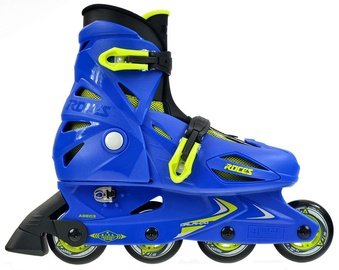

Riedučiai
- Riedučiai
Riedučiai Flying Eagle F3 F110 3X3 Riedučiai Flying Eagle F3 F110 3X3. Vieni aukščiausios klasės riedučių rinkoje, Flying Eagle F3110 Stingray, šie riedučiai pasižymi tokia pat aukšta technologija, kaip 4x80mm riedučiai, tačiau suteiks jum stabilesnį ir greitesnį riedėjimą.Techninės specifikacijos: - Patogus, kietas bato kiautas, apsaugos jūsų pėda nuo sumušimų ... - Riedučiai | Senukai.lt
SEBA HIGH LIGHT BLACK riedučiai . 306,00 € 360,00 € -15%. Išparduota. Išparduota. Pridėti į pageidavimus . Išparduota . FR Skates FRW 80 riedučiai . 199,00 € Išparduota. Pridėti į pageidavimus . Stabdis riedučiams FR Skates/SEBA FRBRK-4W. 17,90 € - Riedučiai NIJDAM | skorpionas.lt
Riedučiai vaikams ar riedučiai suaugusiems, nesvarbu, kam norite išrinkti, svarbiausia, atkreipti dėmesį į šiuos kelis pagrindinius kriterijus. Ratukai – kuo ratukai didesni ir kietesni, tuo riedučiai bus greitesni, kuo mažesni ir minkštesni – tuo lėtesni, tačiau manevringesni ir lengviau valdomi. - Paspirtukai, riedlentės, riedučiai ir kita | Senukai.lt
-20% Riedučiai retro Nijdam 52RF, 37 dydis 54,87 € 68,59 € -20% Reguliuojamo dydžio riedučiai NIJDAM 52SJ, 30-33 dydis 43,67 € 54,59 € Apranga ir avalynė. Apranga ir avalynė Sportinė apranga. Plaukimo kostiumai. Maudymukai ... - Riedučiai (37) - WinnerSport
Welcome to Decathlon, explore a huge range of Freestyle riedučiai, Riedučiai, Quad tipo riedučiai equipment and gear. Enjoy 365 days return policy and 2 - Riedučiai - Decathlon
2rieduciai.lt: K2 riedučiai, riedučių dalys (ratukai, guoliai). Pas mus platus pasirinkimas, geros kainos su didele nuolaida už tikrai aukštos kokybės riedučius. Prekiaujame naujais ir mažai naudotais Prekiaujame ir kitų gamintojų (SEBA, Rollerblade, Powerslide, SALOMON, FILA) riedučiais. Prekyba naujais ir naudotais riedučiais, riedučių dalimis ir aksesuarais. - 2rieduciai.lt - 2rieduciai - Išparduotuvė 2 RIEDUČIAI.LT
Riedučiai taip pat yra puiki priemonė pasportuoti ir patirti puikių emocijų. Važinėdami riedlente ir riedučiais būtinai naudokite riešų, kelių ir alkūnių apsaugas. Paspirtukas yra saugesnė ir praktiškesnė transporto priemonė, nes jo valdymui nereikia jokių specialių įgūdžių. - Riedučiai suaugusiems Vilniuje | - Slides.lt
Riedučiai Fila PRIMO AIR FLOW 127.20 € Siūlyti savo kainą Siūloma kaina € *Jūsų vardas *Jūsų el. paštas *Telefono numeris * būtina užpildyti Siūlyti. 159.00 € Daugiau-20 % . Riedučiai Fila Plume 143.20 ... - Riedučiai - AivaShop.lt
Riedučiai su minkštu batu Ši riedučių rušis išskirtinė tuo, kad stabilumą kojoms suteikia ne išorinė medžiaga, o vidinė. Šie batai pagaminti iš ekologinės odos arba kitos tvirtos medžiagos. Šie riedučiai irgi turi paklausą, nes yra lengvi, gerai vedinasi ir atrodo stilingai. Riedučiai hibridinės konstrukcijos - Riedučiai - Streetboards
Riedučiai tiek suaugusiems, tiek vaikams turi labai daug privalumų. Nurodome pačius pagrindinius, kurie turėtų Jus paskatinti įvertinti riedučių teikiamą naudą. Žinoma, bene pats didžiausias privalumas yra tai, kad riedučiai padeda labai treniruoti kojas. Visi, kurie nori lieknų, tačiau tuo pačiu stangrių kojų – kasdien ...
Apie mus Kaip pirkti? Pristatymas - apmokėjimas Atsiliepimai Garantijos BLOGAS Kontaktai
Sporto prekės
Prekes apžiūrėkite parduotuvėse Kaune, Vilniuje, Raseiniuose 11 priežasčių apsipirkti pas mus Turite klausimų? Skambinkite: +37067527150 Paklausti 1. Pinigų grąžinimo garantija 100%Prekę galima lengvai grąžinti ir atgauti visus pinigus, jeigu ji jums netiks arba tiesiog nepatiks 30 dienų laikotarpyje. Paprasta ir greita grąžinimo procedūra.
2. Pasaulinio garso sporto prekių ženklai
Sertifikuotų ir oficialių tiekėjų produkcija. Prekiniai ženklai: „Sporten“, „Elan“, „Sims“, „Molten“, „Salamon“, „Raven“ ir kt.
3. Garantinio aptarnavimo terminas 6-12 mėnesių
Jeigu garantinio laikotarpio metu su jūsų įsigyta sporto preke kažkas atsitiks - iš karto kreipkitės pas mus ir mūsų specialistus, mes suteiksime garantinį aptarnavimą arba pakeisime į visiškai naują prekę.
4. Nemokamas pristatymas jau kitą darbo dieną
Užsakymai nuo 130.32 € pristatomi nemokamai jau kitą darbo dieną į bet kurį Lietuvos miestą (miestelį, kaimą) iki Jūsų namų arba darbo durų, o kurjeris visada prieš važiuodamas įteikti užsakymo sutaria patogų pristatymo laiką telefonu.
5. Pasimatavimo galimybė pristatymo metu
Jūs galite pasirinkti iki 3 bet kurių skirtingų prekių arba dydžių ir galėsite jas pasimatuoti prieš perkant pristatymo metu. Paslauga galioja miestuose: Kaunas, Vilnius.
6. Lankstūs atsiskaitymo būdai
Galite apmokėti užsakymą Jums patogiu būdu: grynais pinigais prekės pristatymo metu; sėdint namuose per internetinę bankininkystę; mokėjimo kortele atsiimant Post24 terminale.
7. Prekių gyva peržiūra
Visas prekes iš mūsų katalogo galite peržiūrėti gyvai ir nusipirkti mūsų fizinėje parduotuvėje Kaune, Savanorių pr. 273 arba Vilniuje, Apolinaro Juozo Povilaičio g. 20 (PC "Saturnas").
Laukiame Jūsų I-V 10-19h, VI 10-16h.
8. Sporto prekių asortimentasDieną ir naktį ieškome naujų tiekėjų ir gamintojų, nuolat stebime sporto inventoriaus naujoves ir jas pateikiame savo klientams. Mūsų kataloge rasite iki 1000 skirtingų sportinių prekių modelių.
9. Lanksti kainų politika
Stengiamės palaikyti demokratiškas sportinių prekių kainas, kurios parenkamos mūsų parduotuvėje pasiūlymų „Ekonom“, „Medium“ ir „Premium“ principu. Tokiu būdu mes turime ką pasiūlyti skirtingų pajamų klientų kategorijoms.
10. Akcijos ir nuolaidos
Mūsų parduotuvėje nuolat siūlomos įvairios akcijos ir karšti pasiūlymai tokie kaip „Perki 2, o 3-ią gauni nemokamai“, „24 valandų 50% išpardavimas” ir kt.
11. Patogus svetainės funkcionalumas
Paprasta užsakymo procedūra - nereikalaujame registruotis ir pildyti šimtų laukų. Konsultuojame telefonu nuo 10:00 iki 19:00. Jums neprisiskambinus visada perskambinsime patys. Išsamiai atsakome į Jūsų klausimus el. paštu arba sms žinute.
Kategorijos Paslaugos Dviračių servisas Kaune Riedučių Pamokos Kaune Riedučių, riedlenčių ir paspirtukų servisas Riedučių, riedlenčių nuoma Riedžių servisas SB Lizingas Pačiūžų nuoma Slidžių ir snieglenčių servisas Slidžių ir snieglenčių nuoma B2B Riedučiai Vaikams Suaugusiems QUADRO RIEDUČIAI Riedučių apsaugos Riedučių dalys/ priedai Aggressive Riedučių dalys Guoliai Ratukai Stabdžiai Priedai Riedlentės Kruizeriai Longboardai Triukinės Riedlentės Riedlenčių dalys Paspirtukai Visiems Micro Triukiniai PUKY Balansiniai dviratukai Elektriniai Paspirtukų priedai PASPIRTUKŲ DALYS Guoliai Paspirtukų ratukai Pegai Platformos/Decks Rankenos Šakės/Forks Stabdžiai Švitrinis popierius Užspaudėjai/Clamps Vairo kolonėlės Varžtai/ašelės Dviračiai Elektriniai Hibridai/krosiniai Kalnų (MTB) Plentiniai Sulankstomi Trekking/ Miesto-turistiniai Vaikiški Vaikiški 16'' Vaikiški 18'' Vaikiški 20'' Vaikiški 24'' Vaikiški 26'' Cruiser dviračiai BMX/Street/Fix ŠALMAI Dviračių šalmai Riedučių šalmai Slidinėjimo šalmai Aksesuarai Deuter Kuprinės Multifunkcinės skarelės Slidinėjimo akiniai Slidinėjimo Pirštinės Termo apranga Apsaugos Yo-yo žaidimas AVALYNĖ KALNŲ SLIDINĖJIMAS Lazdos Slidžių dėklai Kalnų slidės Slidžių batai SNIEGLENČIŲ SPORTAS Snieglenčių dėklai Snieglentės Snieglenčių apkaustai Snieglenčių batai Slidinėjimo apsaugos Pačiūžos SPORTO ŠAKOS JOGA BOKSAS SPORTINIAI MASAŽUOKLIAI SPORTINĖS GUMOS IR SVARELIAI ŠOKDYNES SVARMENYS IR GRIFAI Slidinėjimo apranga Dovanų kuponai IŠPARDUOTUVĖ Paslaugos Dviračių servisas Kaune Riedučių Pamokos Kaune Riedučių, riedlenčių ir paspirtukų servisas Riedučių, riedlenčių nuoma Riedžių servisas SB Lizingas Pačiūžų nuoma Slidžių ir snieglenčių servisas Slidžių ir snieglenčių nuoma B2B Riedučiai Vaikams Suaugusiems QUADRO RIEDUČIAI Riedučių apsaugos Riedučių dalys/ priedai Aggressive Riedučių dalys Guoliai Ratukai Stabdžiai Priedai Riedlentės Kruizeriai Longboardai Triukinės Riedlentės Riedlenčių dalys Paspirtukai Visiems Micro Triukiniai PUKY Balansiniai dviratukai Elektriniai Paspirtukų priedai PASPIRTUKŲ DALYS Guoliai Paspirtukų ratukai Pegai Platformos/Decks Rankenos Šakės/Forks Stabdžiai Švitrinis popierius Užspaudėjai/Clamps Vairo kolonėlės Varžtai/ašelės Dviračiai Elektriniai Hibridai/krosiniai Kalnų (MTB) Plentiniai Sulankstomi Trekking/ Miesto-turistiniai Vaikiški Vaikiški 16'' Vaikiški 18'' Vaikiški 20'' Vaikiški 24'' Vaikiški 26'' Cruiser dviračiai BMX/Street/Fix ŠALMAI Dviračių šalmai Riedučių šalmai Slidinėjimo šalmai Aksesuarai Deuter Kuprinės Multifunkcinės skarelės Slidinėjimo akiniai Slidinėjimo Pirštinės Termo apranga Apsaugos Yo-yo žaidimas AVALYNĖ KALNŲ SLIDINĖJIMAS Lazdos Slidžių dėklai Kalnų slidės Slidžių batai SNIEGLENČIŲ SPORTAS Snieglenčių dėklai Snieglentės Snieglenčių apkaustai Snieglenčių batai Slidinėjimo apsaugos Pačiūžos SPORTO ŠAKOS JOGA BOKSAS SPORTINIAI MASAŽUOKLIAI SPORTINĖS GUMOS IR SVARELIAI ŠOKDYNES SVARMENYS IR GRIFAI Slidinėjimo apranga Dovanų kuponai IŠPARDUOTUVĖ Pagrindinis Riedučiai
Riedučiai
Tiems, kurie nori pajudėti ar tiesiog išmėginti naują užsiėmimą – siūlome išbandyti vieną iš populiariausių aktyvaus laiko lauke praleidimo būdų – pasivažinėjimą riedučiais. Riedučiai, tai gana energinga treniruotė, kurios metu patirsite tik geriausias emocijas, praleisite daugiau laiko gryname ore, be to, šiuo sportu gali mėgautis visa šeima: nuo mažiausio iki didžiausio. Riedučių pasirinkimas išties gausus, tad daugelis susiduria su sunkumais, kaip pasirinkti tinkamiausius ir geriausiai jų lūkesčius atitinkančius riedučius. Ieškantiems riedučių svarbiausia įvertinti savo galimybes ir norimus pasiekti rezultatus. Įvertinus įgūdžius, bus kur kas lengviau atsakyti į klausimą – kokius riedučius pirkti.Riedučiai vaikams ar riedučiai suaugusiems, nesvarbu, kam norite išrinkti, svarbiausia, atkreipti dėmesį į šiuos kelis pagrindinius kriterijus.
Ratukai – kuo ratukai didesni ir kietesni, tuo riedučiai bus greitesni, kuo mažesni ir minkštesni – tuo lėtesni, tačiau manevringesni ir lengviau valdomi. Taigi, pradedančiajam geriausia pirkti mažesnių ir minkštesnių ratukų riedučius, kuriuos valdyti bus lengviau, o pažengusiems ir gerai važiuojantiems – didesnių ir kietesnių ratukų riedučius.
Tvirtinimo rėmas. Plastmasinis – skirtas pradedantiesiems, jis geriau sugeria vibracijas, bet riedučiai yra lėtesni. Aliumininis rėmas suteikia geresnį atsispyrimo momentą bei yra tvirtesnis, patvaresnis, ilgaamžiškesnis ir leidžiantis pasiekti didesnį riedėjimo greitį.
Užveržimo sistema. Tradicinis užveržimas yra su raišteliais, pažangesnis – užtempiamas užveržimas, o pats moderniausias – krosiukų ratukų lengvai užveržiamas ir atpalaiduojamas.
Lengvai reguliuojami ir patogiai prisitaikantys prie Jūsų kojos, patvarūs ir kokybiški, įvairių dydžių riedučiai vaikams ir suaugusiems. Rinkitės iš gausios ir žaismingos spalvų paletės, modernių dizainų. Mūsų siūlomame asortimente tikrai išsirinksite Jūsų poreikius atitinkančius riedučius suaugusiems ir vaikams gera kaina. Riedučius internetu pirkite pigiai, greitai ir paprastai!
Riedučių elektroninėje parduotuvėje nuolat vyksta riedučių išpardavimai, taikomos akcijos įvairių riedučių dydžiams. Kaune, Vilniuje, Panevėžyje, Klaipėdoje ar bet kuriame Lietuvos kampelyje išsirinkus riedučius internetu – pristatysime juos greitai, pasirinktoje vietoje, Jums patogiu metu!
Kaina € - € Gamintojai Bauer 0 Croxer 0 Fila 0 Flying Eagle 0 Heelys 0 K2 0 Powerslide 0 Raven 0 Raven 0 Rollerblade 0 Seba 0 Dydis 1.0 0 10.0 0 10.5 0 11.0 0 11.5 0 12.0 0 26-29 0 28-32 0 29-32 0 29-34 0 30-33 0 31 0 31-35 0 32 0 32-35 0 32-36 0 32-37 0 33 0 33-36 0 34 0 34-37 0 35 0 35-38 0 35-39 0 36 0 36,5-40.5 0 37 0 37-38 0 37-40 0 38 0 38,5 0 38-41 0 38-42 0 39 0 39,5 0 39-42 0 4.0 0 40 0 40,5 0 40-43 0 41 0 42 0 42,5 0 43 0 43-44 0 43-46 0 44 0 44,5 0 45 0 45,5 0 46 0 46-47 0 47 0 47,5 0 49 0 5.5 0 50 0 51 0 6.0 0 6.5 0 7.0 0 7.5 0 8.0 0 8.5 0 9.0 0 9.5 0 Rūšiuoti pagal: Standartinė Kaina (Žema Aukšta) Kaina (Aukšta Žema) Rodyti: 15 25 50 75 100
Riedučiai Advance Black
Prekės kodas: ADVANCE
49.00€
Pirkti PlačiauRiedučiai Profession Black/Mint
Prekės kodas: jk-6
59.00€ 49.00€
Pirkti PlačiauRiedučiai Raven Princess Pink
Prekės kodas: A-T135
49.00€
Pirkti PlačiauRiedučiai Raven Profession white/mint
Prekės kodas: A-T135
69.00€ 49.00€
Pirkti PlačiauRiedučiai Raven Pulse white/pink
Prekės kodas: rvp326
69.00€ 49.00€
Pirkti PlačiauRiedučiai Raven Spirit Black/White
Prekės kodas: rvn367
69.00€ 49.00€
Pirkti PlačiauPačiūžos-Riedučiai Contour 2 in 1 Juoda/Žalia
Prekės kodas: zlt219
59.00€
Pirkti PlačiauRiedučiai Exima Black/Mint
Prekės kodas: 22356
59.00€
Pirkti PlačiauRiedučiai Croxer Exima Black
Prekės kodas: 65856
59.00€
Pirkti PlačiauRiedučiai Exima White/Mint
Prekės kodas: 66652
59.00€
Pirkti PlačiauRiedučiai Optima Black
Prekės kodas: 1254
59.00€
Pirkti PlačiauRiedučiai Raven Pulse Black
Prekės kodas: kk633
59.00€
Pirkti PlačiauRiedučiai Raven Spirit Black/Mint
Prekės kodas: R5652
59.00€
Pirkti PlačiauRiedučiai Xenon Red
Prekės kodas: A-T135
65.00€
Pirkti PlačiauRiedučiai Fila X-One Girl Black/Magenta
Prekės kodas: FILA1
85.00€ 65.00€
Pirkti Plačiau 1 2 3 4 5 6 7 | Rodoma nuo 1 iki 15 iš 97 (7 puslapių) Prekių krepšelis Prekių: 0 Suma: 0.00€ Pirkti Peržiūrėti Jūsų prekių krepšelis tuščias Draugaukime FB!
Mantas
Esu labai dėkingas pardavėjui Martynui už profesionalią konsultaciją, greitą pristatymą bei puikią kainą. Sėkmės!
Arunas
šiandien Kaune pirkau slides nerealiai pozityvus pardavėjas suteikė labai geros energijos savo maloniu ir nuoširdžiu bendravimu. Ačiu.
Simona
Nusprendėm su drauge pavažinėti riedučiais , parinko ir riedučius ir apsaugas. Kritom bet buvo labai smagu. Dėkui :DD
Dainius
Pirkau slidinėjimo akinius tai buvau sužavėtas aptarnavimu ir konsultanto kantrybe, kol išsirinkau. Rekomenduoju ;)
Saulius
Labai nuoširdus konsultavimas. Įsigilina į kliento poreikį. Atlieka kokybišką pardavimą.
Prideti atsiliepimą Daugiau atsiliepimų Kategorijos
Paslaugos | Dviračių servisas Kaune | Riedučių Pamokos Kaune | Riedučių, riedlenčių ir paspirtukų servisas | Riedučių, riedlenčių nuoma | Riedžių servisas | SB Lizingas | Pačiūžų nuoma | Slidžių ir snieglenčių servisas | Slidžių ir snieglenčių nuoma | B2B | Riedučiai | Vaikams | Suaugusiems | QUADRO RIEDUČIAI | Riedučių apsaugos | Riedučių dalys/ priedai | Aggressive | Riedučių dalys | Guoliai | Ratukai | Stabdžiai | Priedai | Riedlentės | Kruizeriai | Longboardai | Triukinės Riedlentės | Riedlenčių dalys | Paspirtukai | Visiems | Micro | Triukiniai | PUKY | Balansiniai dviratukai | Elektriniai | Paspirtukų priedai | PASPIRTUKŲ DALYS | Guoliai | Paspirtukų ratukai | Pegai | Platformos/Decks | Rankenos | Šakės/Forks | Stabdžiai | Švitrinis popierius | Užspaudėjai/Clamps | Vairo kolonėlės | Varžtai/ašelės | Dviračiai | Elektriniai | Hibridai/krosiniai | Kalnų (MTB) | Plentiniai | Sulankstomi | Trekking/ Miesto-turistiniai | Vaikiški | Vaikiški 16'' | Vaikiški 18'' | Vaikiški 20'' | Vaikiški 24'' | Vaikiški 26'' | Cruiser dviračiai | BMX/Street/Fix | ŠALMAI | Dviračių šalmai | Riedučių šalmai | Slidinėjimo šalmai | Aksesuarai | Deuter Kuprinės | Multifunkcinės skarelės | Slidinėjimo akiniai | Slidinėjimo Pirštinės | Termo apranga | Apsaugos | Yo-yo žaidimas | AVALYNĖ | KALNŲ SLIDINĖJIMAS | Lazdos | Slidžių dėklai | Kalnų slidės | Slidžių batai | SNIEGLENČIŲ SPORTAS | Snieglenčių dėklai | Snieglentės | Snieglenčių apkaustai | Snieglenčių batai | Slidinėjimo apsaugos | Pačiūžos | SPORTO ŠAKOS | JOGA | BOKSAS | SPORTINIAI MASAŽUOKLIAI | SPORTINĖS GUMOS IR SVARELIAI | ŠOKDYNES | SVARMENYS IR GRIFAI | Slidinėjimo apranga | Dovanų kuponai | IŠPARDUOTUVĖ |Informacija
Apie mus Kaip pirkti? Pristatymas - apmokėjimas Privatumo politika Terminai ir sąlygos Garantijos KontaktaiTurite klausimų? Skambinkite:
+37067527150 Paklausti Parašykite mums el.paštu:info@sportvision.lt Sportvision.lt © 2014-2020. Visos teisės saugomos.


Mauris vulputate dolor
Rutrum fermentum nibh in augue praesent urna congue rutrum.
Etiam posuere